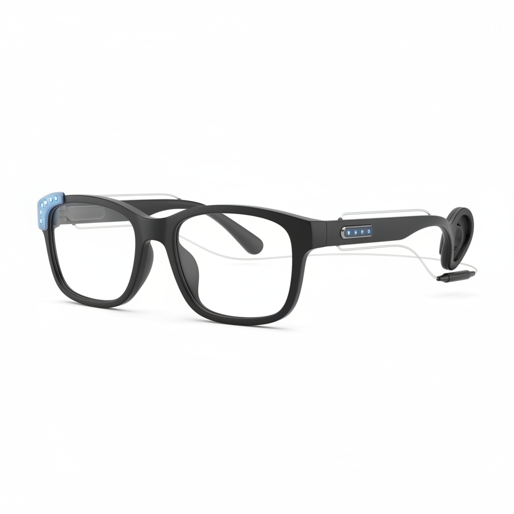
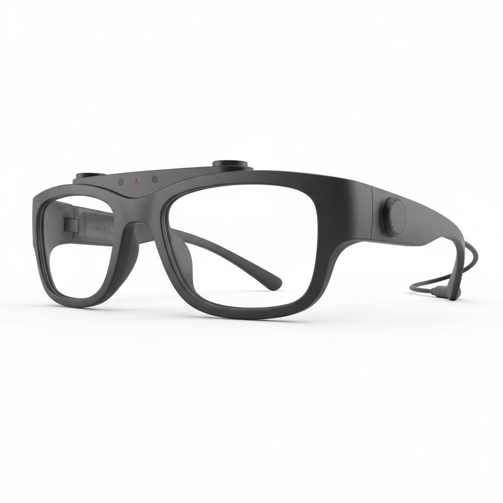
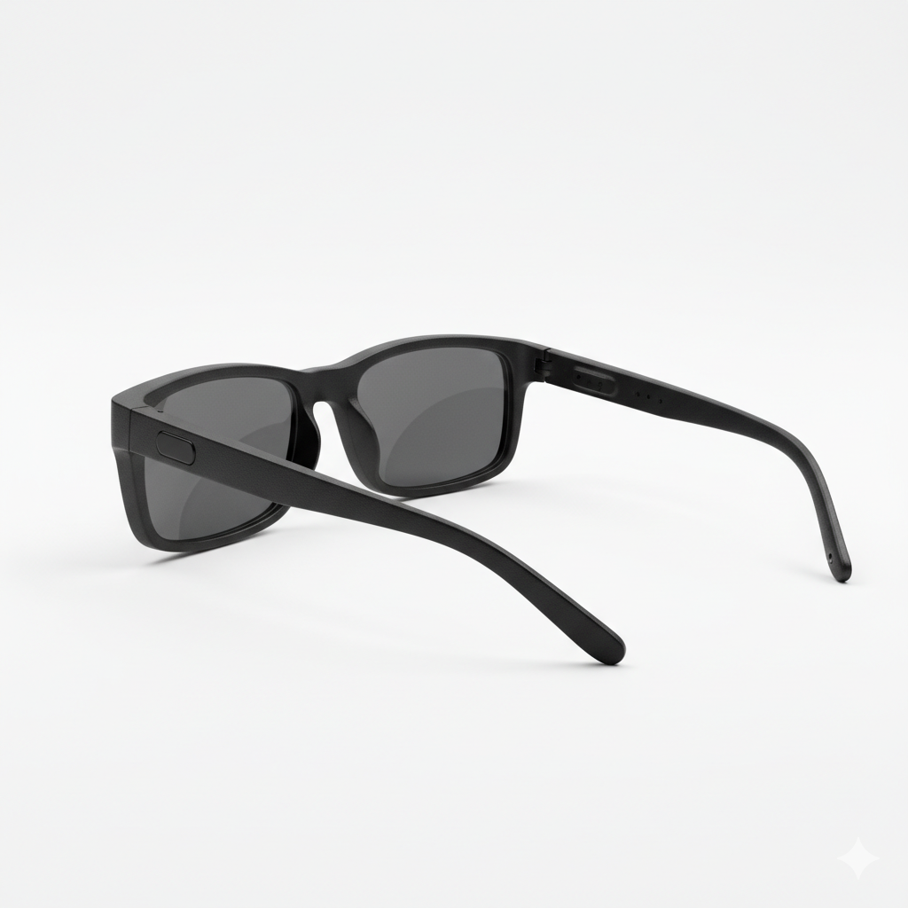
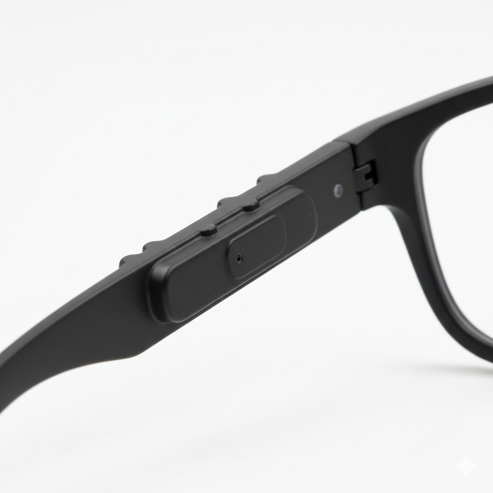
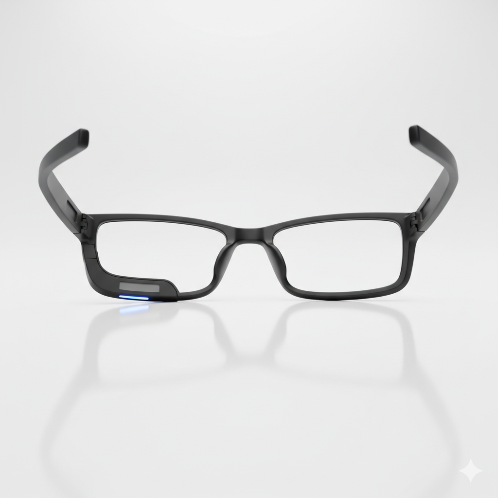

Tecnologia assistiva para pessoas com deficiência visual.
Além das dificuldades físicas, muitas pessoas com deficiência visual também enfrentam desafios sociais, como a dependência de outras pessoas para realizar tarefas simples do dia a dia. Isso pode impactar diretamente na autoestima e na qualidade de vida.
Pensando nisso, o VibeWay não é apenas um dispositivo tecnológico, mas uma ferramenta de inclusão social. Ele permite que o usuário tenha mais controle sobre seus próprios movimentos, reduzindo riscos e aumentando a sensação de segurança em diferentes ambientes.
O uso de tecnologias assistivas como o VibeWay representa um avanço importante na construção de uma sociedade mais acessível e igualitária, onde todas as pessoas possam exercer sua liberdade com dignidade.
Além disso, o dispositivo foi pensado para ser simples, intuitivo e eficiente, permitindo que qualquer pessoa possa utilizá-lo sem dificuldades, mesmo sem conhecimento técnico.
O VibeWay é um protótipo inspirado em óculos inteligentes, desenvolvido a partir do Kit Avançado 1. O sistema utiliza um sensor ultrassônico para detectar obstáculos no caminho do usuário.
As informações captadas são processadas por um microcontrolador, que interpreta a distância dos objetos e ativa um motor vibratório. Quanto mais próximo o obstáculo, mais intensa será a vibração emitida.
Dessa forma, o dispositivo permite que o usuário perceba o ambiente ao seu redor de maneira simples e intuitiva, aumentando sua segurança durante a locomoção.
O aplicativo e o site da VibeWay foram projetados para oferecer uma experiência personalizada e acessível ao usuário. Através do app, é possível ajustar configurações como intensidade das vibrações e modos de detecção.
Além disso, o sistema pode incluir funcionalidades como navegação assistida por GPS com feedback vibratório, alertas personalizados, histórico de trajetos e integração com mapas acessíveis.
Para ampliar a inclusão, o software também poderá contar com comandos por voz, facilitando o uso por pessoas com deficiência visual. O site atuará como plataforma de suporte, oferecendo tutoriais, atualizações e acompanhamento do produto.
Embora existam soluções assistivas no mercado, como bengalas inteligentes e aplicativos de navegação por áudio, o VibeWay se destaca por adotar uma abordagem inovadora baseada na comunicação sensorial por vibração de forma contínua e intuitiva.
Diferentemente de tecnologias que dependem de estímulos sonoros, o VibeWay reduz a sobrecarga auditiva do usuário, tornando-se mais eficiente em ambientes urbanos ruidosos, onde sons podem ser facilmente confundidos ou ignorados.
Outro grande diferencial é a integração entre hardware e software, permitindo uma experiência personalizada. O usuário pode adaptar o funcionamento do dispositivo de acordo com suas necessidades, tornando a tecnologia mais acessível e inclusiva.
Além disso, o projeto busca oferecer uma solução com custo potencialmente mais acessível quando comparado a tecnologias similares no mercado, ampliando o acesso a dispositivos assistivos e contribuindo para a democratização da inovação.
O VibeWay não é apenas um produto, mas uma proposta de transformação social, promovendo autonomia, segurança e qualidade de vida para pessoas com deficiência visual.
Todos os dias, pessoas com deficiência visual enfrentam obstáculos que colocam sua segurança em risco.
Mais do que um produto, o VibeWay é uma solução que promove autonomia, segurança e inclusão.
Não tem conta? Criar agora